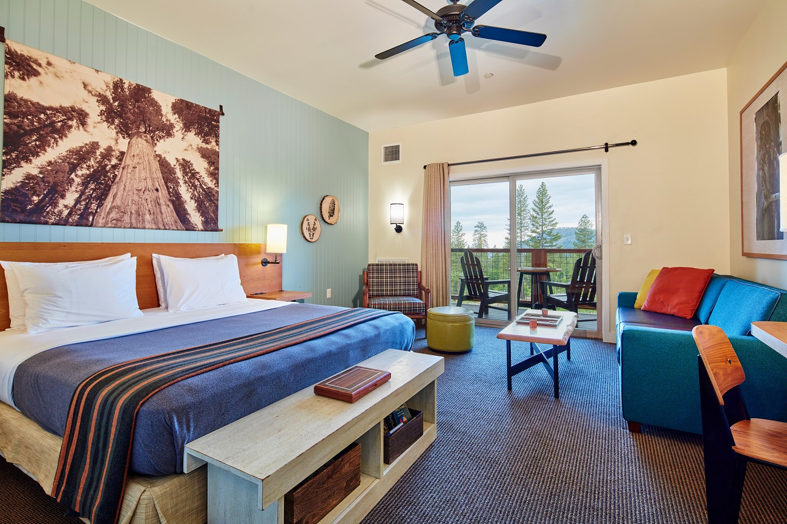
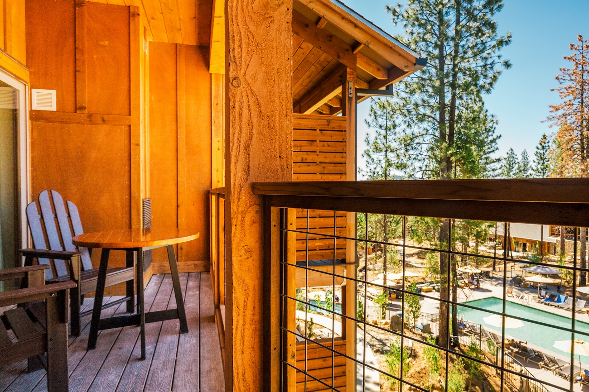
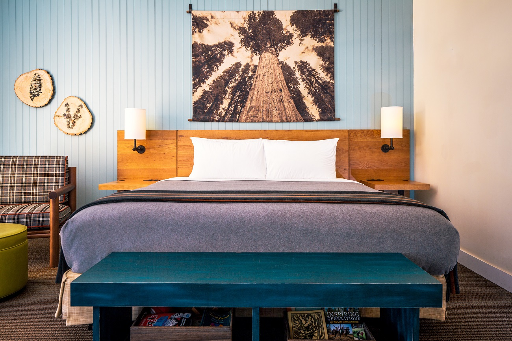

Fri17July
Arrival & lodge afternoon
Check in at Rush Creek Lodge
Settle in and explore the property.
Pool time
Relax and reset after the drive.
Dinner at The Tavern
Optional stargazing and s’mores at 9:00 PM.
Chapters & Passports presents
Four thoughtfully paced days of iconic valley views, relaxed lodge time and an unhurried Cathedral Beach picnic.
The weekend at a glance
The itinerary blends Yosemite’s essential viewpoints with pool time, easy dining and flexible hiking. Saturday centers on Cathedral Beach, followed by classic valley stops and dinner at 6:30 PM.
“A slower itinerary leaves more space for the moments you remember.”
Chapters & Passports

Your itinerary
Settle in and explore the property.
Relax and reset after the drive.
Optional stargazing and s’mores at 9:00 PM.
Begin early for lighter traffic and easier parking.
Saturday dinner at Rush Creek Lodge.
Approximately 2.7 miles round trip from the lodge.
About 45 minutes by car · roughly 5 miles round trip.
2–5 miles round trip · mostly flat with Half Dome views.
Allow additional time for summer road traffic.
Featured experience
Spend the morning beside the Merced River with an easy walk, dedicated photo time, quiet relaxation and a picnic lunch at noon.
The parking area is only a short walk from the Merced River. Find a quiet spot along the shoreline and enjoy one of the best ground-level views of El Capitan. If the river is calm, you’ll often see beautiful reflections of the granite cliffs.
Follow the informal, mostly flat and shaded trails along the river at your own pace.
Capture El Capitan towering above the trees, reflections in the river, sandy beach foregrounds and family or group photos with dramatic scenery. It is an ideal photo stop without the larger crowds often found at Tunnel View.
Settle beside the river with camping chairs or a picnic blanket, coffee or cold drinks, and a book or journal. Keep any speaker at very low volume; headphones are even better for preserving the quiet.
Use a picnic table if one is available, or spread out your blanket on the sandy beach. Store food securely, never leave it unattended, and pack out all trash to help keep the park pristine.
If the weather is warm and water conditions are safe, wade along the shallow edges of the Merced River. The water is usually cold—even in July—so it can feel refreshingly brisk.
Pack for the picnic


Your home base
Contemporary mountain comfort near Yosemite’s Highway 120 west entrance, with onsite dining, a pool and inviting spaces after a day in the park.
Summer congestion can add significant time. Build flexibility into the day.
Pack out all picnic waste and never feed wildlife.
Review park alerts, road conditions, fire information and river notices before departure.